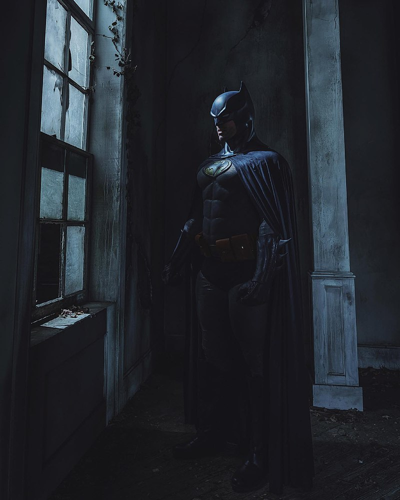

Hola, mi nombre es Luis Enrique. Tengo 22 años, curso el 5to semestre de Ingenieria Informatica. Me gusta la musica (en especial la electronica), disfrutar de los videojuegos cooperativos y las peliculas de ciencia ficción.
| Proyecto | Lenguajes | Descripción |
|---|---|---|
| Mapa Metabólico | N/A | Se desarrollo y evaluo cada una de las rutas metabolicas del cuerpo |
| Servidor de Linux | C | Se monto un servidor dentro del SO Linux funcional, contando con diferentes servicion como: web, impresion, correo, una base de datos, etc. |
| Red cableada de una empresa | Diseñar una red cableada, inalámbrica y de VoIP, implementando una conexión entre 3 ciudades mediante la NUBE y que puedan hacer ping entre ellas, ya sea por IPv4 o IPv6 |
 Si lo quisiera, podría vencer a todos los otros superhéroes de DC. Posee una lista con debilidades de cada integrante de la Liga.
Dale un vistazo a Bibliografia